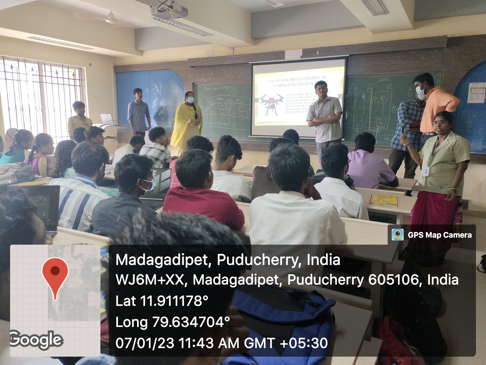

My hobby is hearing the speach of great people and slowly i started learning the way how to communicate with others and i want to expose my talent to the world andcommunication helps me to connect with different people and so helps me in different ways.. I used to listen to the speakings of great speakers and practice the good things in their way of speaking. from school i was the one who used to take seminar in the class and i like to do such things because i like speaking. I am doing the same thing in our college which I am studying "SRI MANAKULA VINAYAGAR ENGINEERING COLLEGE", i took seminars in this college too.I like participating in various events and expose my talents. Here hy hobby helped me very much for undergoing various competition where my hobby gave my confidence to speak.In our college they used to conduct various competitions and I used to participate in every competitions whatever the final outcome is my hobby gave my boldness to speak in front of the crowd. Still now i have participated in two projects and i will attach the picture of me giving seminar in front of my friends.
